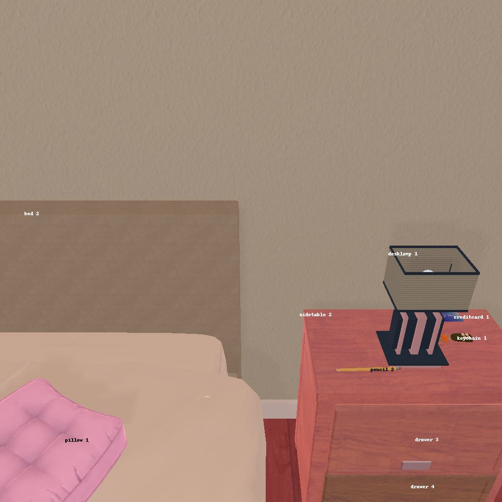

---------------------------------------------------------task: 2---------------------------------------------------------
--------------------------------------------------------------------------------------------------------------------------------------------------------------------
--------------------------------------------------------------------------------------------------------------------------------------------------------------------
Step:--------------------------------------------------------------------------4-------------------------------------------------------------------------------
----------------------------------------
VLM Prompt:
Image1:
**Instruction**
1. Analyze the provided image to identify all visible household objects, focusing on those relevant to the task description "look at pen under the desklamp."
2. Use the analysis of the image and the task hint "The agent must find an object of the desired type, locate and turn on a light source with the desired object in-hand." to answer the question: what is the most reasonable action in the choices for the task description "look at pen under the desklamp"?
4. Decide and write the answer using the template: The answer is: (i): , where i is the real number. If there is no desired object in the image, search every place based on **Initial Observation** to find the object. And if no one is exactly correct, choose a similar answer.
**Initial Observation**
You are in the middle of a room. Looking quickly around you, you can see bed (1-2), dresser (1), drawer (1-11), sidetable (1-2), desk (1), garbagecan (1), safe (1)
**Answer Choices**
(1): go to bed 1
(2): go to dresser 1
(3): go to bed 2
(4): go to sidetable 1
(5): go to drawer 2
(6): go to drawer 3
(7): go to drawer 4
(8): go to desk 1
(9): go to garbagecan 1
(10): go to drawer 5
(11): go to drawer 6
(12): go to drawer 7
(13): go to drawer 8
(14): go to drawer 9
(15): go to drawer 10
(16): go to drawer 11
(17): go to safe 1
(18): take pillow 1 from sidetable 2
(19): take keychain 1 from sidetable 2
(20): take pencil 2 from sidetable 2
(21): take creditcard 1 from sidetable 2
(22): use desklamp 1
(23): examine sidetable 2
**Answer**
Let's think step by step by following the instructions.
----------------------------------------
----------------------------------------
Original Response:
First, we need to identify all visible household objects related to the task "look at pen under the desklamp." In the image provided, the objects relevant to the task are desklamp 1, sidetable 2, and pencil 2. However, pencil 2 is not the desired object (a pen) according to the task description.
The task hint suggests that the agent must find a pen, locate and turn on a light source (desklamp 1) with the pen in hand. Since there is no pen visible in the image, the agent must search every place based on the **Initial Observation** to find the object.
Considering the task description and the hint, the most reasonable action would be to first locate the pen. Since no pen is visible on sidetable 2 or in the image, the agent must search in other locations, such as drawers, where pens are commonly kept.
Based on the **Initial Observation**, there are several drawers (drawer 1-11) and other places that could potentially contain a pen.
Since there is no specific action choice to "search for a pen," we must choose the closest action that might lead to finding a pen, which would be to go to one of the drawers.
The answer is: (5): go to drawer 2. This action represents the beginning of the search for the pen, which is the necessary first step to accomplishing the task. Since drawer 2 is the first drawer option listed after the sidetable 2, it's a reasonable place to start searching.
----------------------------------------
----------------------------------------
>>> Refine Original VLM Response and Get Pure Action: go to drawer 2
----------------------------------------
-----------------------------------------------------------------
Running time: 11.091572999954224 seconds
Total Money: 0.5355100000000002
-----------------------------------------------------------------
-----------------------------------------------------------------
Text Observation:You arrive at loc 5. The drawer 2 is closed.
-----------------------------------------------------------------
UNSUCCEED